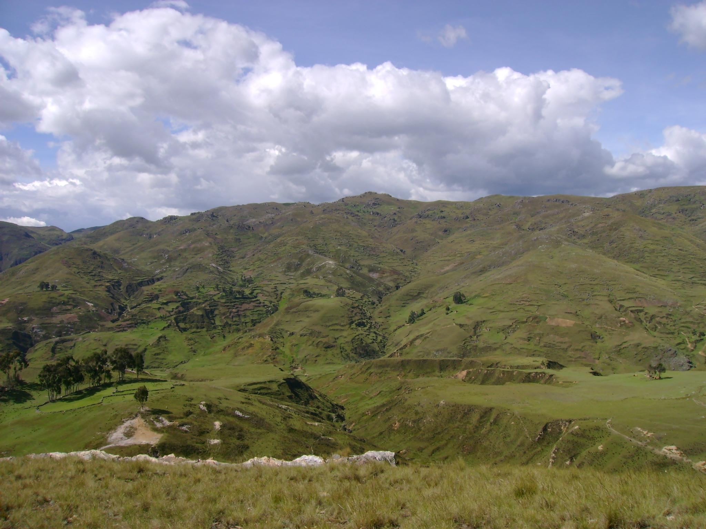

Taller participativo de autoevaluación final
Cinco años de cambios en el sistema alimentario de Huánuco
Celebrando los cambios que sembramos juntos.

Taller participativo de autoevaluación final
Celebrando los cambios que sembramos juntos.